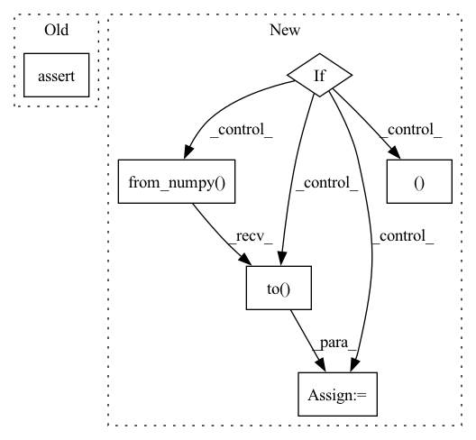

Pattern ID :4412

Before Change
j_output, (jh, jc) = j_rnn(jt.float32(input),
(jt.float32(h0), jt.float32(c0)))
assert np.allclose(t_output.detach().numpy(), j_output.data, rtol=1e-03, atol=1e-06)
assert np.allclose(th.detach().numpy(), jh.data, rtol=1e-03, atol=1e-06)
assert np.allclose(tc.detach().numpy(), jc.data, rtol=1e-03, atol=1e-06)
After Change
def check_equal_2(t_rnn, j_rnn, input, h0, c0, dev=None):
j_rnn.load_state_dict(t_rnn.state_dict())
if dev:
t_output, (th, tc) = t_rnn(torch.from_numpy(input).to(dev),
(torch.from_numpy(h0).to(dev), torch.from_numpy(c0).to(dev)))
else:
t_output, (th, tc) = t_rnn(torch.from_numpy(input).to(dev),
(torch.from_numpy(h0), torch.from_numpy(c0)))
j_output, (jh, jc) = j_rnn(jt.float32(input),
In pattern: SUPERPATTERN
Frequency: 3
Non-data size: 6
Instances
Fragment ID: 16195799
Project Name: jittor/jittor
Commit Name: 9ec300f2aafc68e8dc503866954a7293214ada85
Time: 2021-09-28
Author: lzhengning@gmail.com
File Name: python/jittor/test/test_rnn.py
M Class Name: AnonimousClass
N Class Name: AnonimousClass
M Method Name: check_equal_2(6)
N Method Name: check_equal_2(5)
M Parent Class:
N Parent Class:
M File Name: python/jittor/test/test_rnn.py
N File Name: python/jittor/test/test_rnn.py
M Start Line: 41
M End Line: 49
N Start Line: 42
N End Line: 57
'>
Before Change
j_output, jh = j_rnn(jt.float32(input), jt.float32(h0))
assert np.allclose(t_output.detach().numpy(), j_output.data, rtol=1e-03, atol=1e-06)
assert np.allclose(th.detach().numpy(), jh.data, rtol=1e-03, atol=1e-06)
def check_equal_2(t_rnn, j_rnn, input, h0, c0):
After Change
def check_equal_1(t_rnn, j_rnn, input, h0, dev=None):
j_rnn.load_state_dict(t_rnn.state_dict())
if dev:
t_output, th = t_rnn(torch.from_numpy(input).to(dev), torch.from_numpy(h0).to(dev))
else:
t_output, th = t_rnn(torch.from_numpy(input), torch.from_numpy(h0))
'>
Fragment ID: 16195794
Project Name: jittor/jittor
Commit Name: 9ec300f2aafc68e8dc503866954a7293214ada85
Time: 2021-09-28
Author: lzhengning@gmail.com
File Name: python/jittor/test/test_rnn.py
M Class Name: AnonimousClass
N Class Name: AnonimousClass
M Method Name: check_equal_1(5)
N Method Name: check_equal_1(4)
M Parent Class:
N Parent Class:
M File Name: python/jittor/test/test_rnn.py
N File Name: python/jittor/test/test_rnn.py
M Start Line: 30
M End Line: 35
N Start Line: 25
N End Line: 40
'>
Before Change
return normalize_convert
def declare_state_and_memory(self, previous_state: State) -> Tuple[State, Optional[AllocationQuery]]:
assert previous_state.jit_mode
self.previous_shape = previous_state.shape
my_state = (replace(previous_state, dtype=self.dtype), AllocationQuery(shape=previous_state.shape, dtype=self.dtype))
After Change
def declare_state_and_memory(self, previous_state: State) -> Tuple[State, Optional[AllocationQuery]]:
if previous_state.device == ch.device("cpu"):
new_state = replace(previous_state, jit_mode=True, dtype=self.dtype)
return new_state, AllocationQuery(
shape=previous_state.shape,
dtype=self.dtype,
device=previous_state.device
)
else:
self.mode = "gpu"
new_state = replace(previous_state, dtype=self.dtype)
gpu_type = ch_dtype_from_numpy(self.dtype)
// Copy the lookup table into the proper device
try:
self.lookup_table = ch.from_numpy(self.lookup_table)
except TypeError:
pass // This is alredy a tensor
self.lookup_table = self.lookup_table.to(previous_state.device)
return new_state, AllocationQuery(
shape=previous_state.shape,
device=previous_state.device,
dtype=gpu_type
)
'>
Fragment ID: 16195801
Project Name: libffcv/ffcv
Commit Name: 600f5e635b32031796979a1bd195015164fe9f43
Time: 2022-01-11
Author: leclerc@mit.edu
File Name: ffcv/transforms/normalize.py
M Class Name: NormalizeImage
N Class Name: NormalizeImage
M Method Name: declare_state_and_memory(2)
N Method Name: declare_state_and_memory(2)
M Parent Class: Operation
N Parent Class: Operation
M File Name: ffcv/transforms/normalize.py
N File Name: ffcv/transforms/normalize.py
M Start Line: 65
M End Line: 69
N Start Line: 103
N End Line: 129